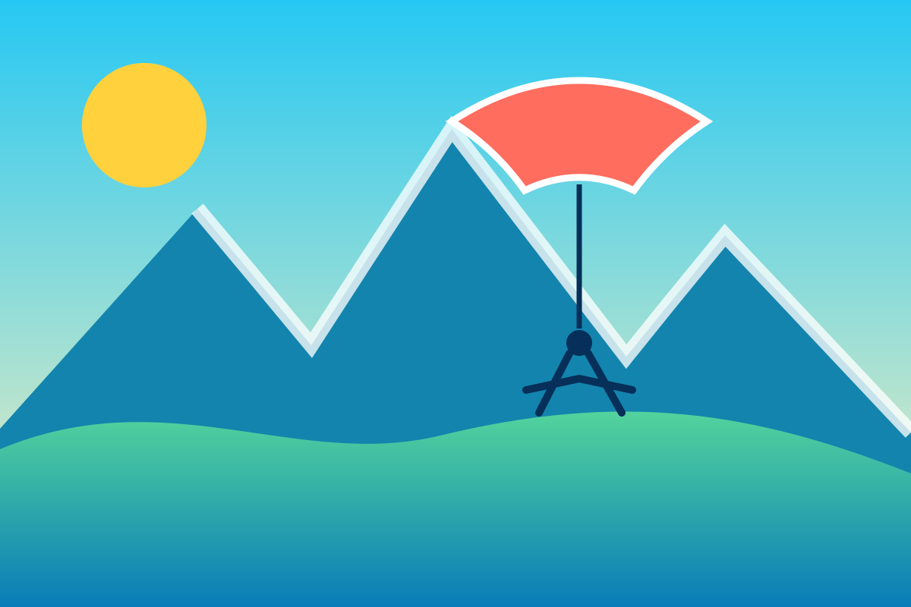

Premier vol
Un format rassurant pour découvrir le vol biplace et le paysage.
Dans les airs
Une page volontairement transparente : Aravis Parapente est l’activité commerciale portée par l’éditeur du guide Aravis Deux Versants.

Transparence éditoriale
Cette page n’est pas une recommandation neutre. Elle présente l’activité de l’éditeur, séparément des bonnes adresses sélectionnées dans le guide.
Un format rassurant pour découvrir le vol biplace et le paysage.
À présenter selon les conditions, le niveau et les prestations réellement proposées.
Ajoutez votre lien de réservation ou votre formulaire commercial.